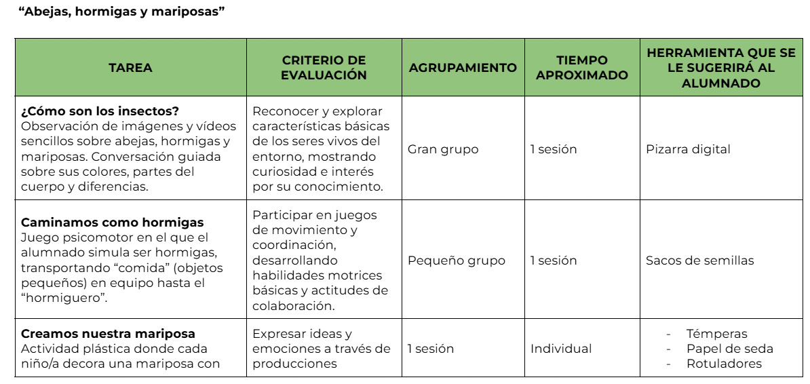
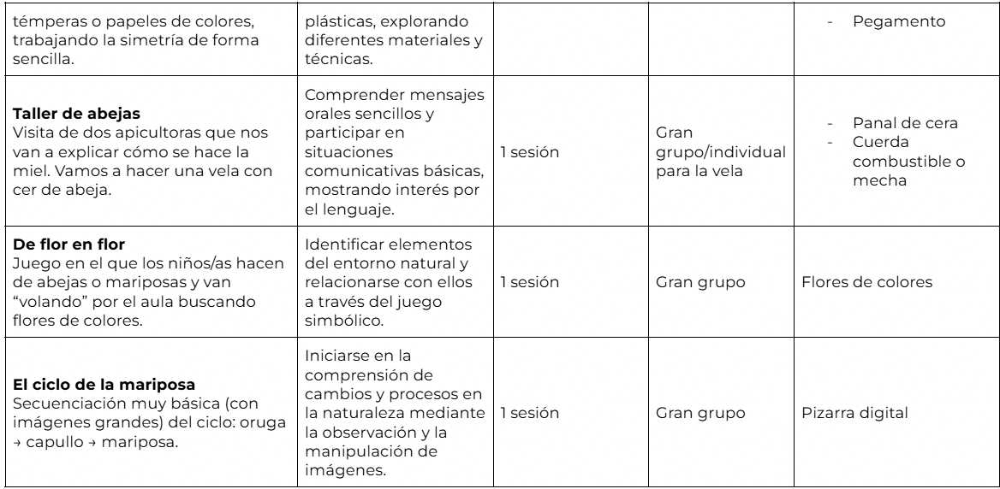

Relación de tareas con criterios


En un aula de 3 años donde el único recurso tecnológico es la pizarra digital, la clave está en la simplicidad. Es fundamental dejar todo preparado antes de la actividad: comprobar que la pizarra funciona, que los vídeos o recursos se abren correctamente y, si es posible, tenerlos ya cargados o descargados para no depender de internet.
Dado que el alumnado es muy pequeño, el uso de la tecnología debe ser guiado, evitando que manipulen directamente la pizarra sin supervisión, lo que reduce errores técnicos y mantiene el orden en el aula.